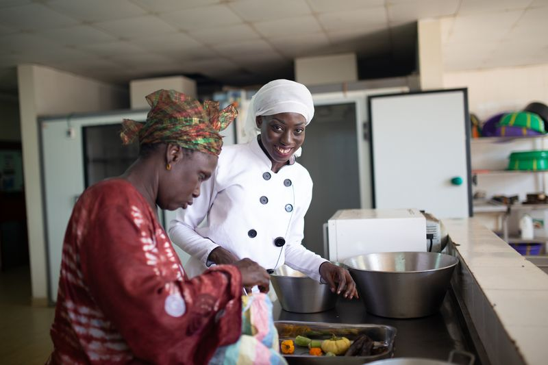

Become a partner
See who the archive is for, what a partnership involves and how to ask. We answer within a working day.

AR-1350 · Bamako, Mali Photo: Africa Reframed

AR-1137 · Nairobi, Kenya Photo: Africa Reframed

AR-1628 · Banjul, The Gambia Photo: Africa Reframed
- By sharingUse the archiveFree for non-profit and public organisations.The questions and the form ↓
- By productionBuild a collectionA partner makes a new collection possible, and it joins the archive.The questions and how to start ↓
- Beside the archiveMake something with usA workshop, an exhibition or a project of your own.The questions and how to start ↓
On trial beside the Partnerships page, which is unchanged. The forms are live: a request or a message sent from here reaches the Partner database.
Use the archive
Take the pictures into your own work. The archive is free for the organisations we approve.
Is the archive for an organisation like ours?
The archive is free for selected non-profit and public partners: NGOs, media, educational institutions, embassies, ministries and development finance institutions.
Cultural institutions and foundations ask in the same way.
What does approved by name mean?
Each organisation is approved before it gets access, and each person has a login of their own. That is how we know where the images go.
What is in the archive?
1,122 photographs of contemporary African life from Bamako, Nairobi and Banjul, in five themes: Learning, Work and enterprise, Everyday digital, City life, and Creativity and culture.
What does it cost?
Nothing. Images are always free for partners.
What do we get when we download?
The original file, 6,000 pixels wide, comes to your email together with its licence.
What does the form ask?
Your organisation, its type and its country, your name and role, your email, and how you will use the images. You can also tell us what imagery you are looking for.
How long does it take?
We read every request ourselves, and you have our answer within a working day. A confirmation with a reference comes to your email at once.
What do you do with what we tell you?
The form asks you to agree to one thing: that how you use the images may be reported, without personal details, to the funders who make new collections possible.
Ask for access
A short form. We read every request ourselves.
Build a collection
A partner makes a new collection possible, and it joins the archive, where every partner can use it.
How does a collection start?
With a partner and a theme: one close to the partner’s work, or one it wants to support. A sector, a skill, a city, a change under way. Never the partner’s own operations.
How does a company take part?
By building a collection. A company makes a new collection possible and is named on it.
Who makes it?
We find the people and places that show the theme and work with photographers from the countries concerned. Every photographer is credited and paid.
Where does our name stand?
On the collection, wherever it is shown. What the images show stays with us: name and stage, never editorial control.
What becomes of the collection?
It joins the archive, where every partner can use it. The partner, the people in the pictures and other organisations each tell their part with the same images.
Is there an example?
One example of such work is the BESTSELLER FOUNDATION Waste to Value Collection, made for the foundation and the seven companies it shows.
What does it cost?
That depends on the theme and the places. Write to us and we talk it through.
Write to us about a collection
A few lines are enough. We answer within a working day.
Make something with us
A workshop, an exhibition, a project across sectors: some things are shaped case by case.
What can we make together?
Workshops, exhibitions and other projects, each shaped around what the partner has in mind. A project can gather several partners around one theme.
What have the workshops been?
On visual storytelling and the market for photographs, built with photography schools, photographers’ unions and press associations: in Bamako, Freetown, Nairobi and Banjul so far.
And the exhibitions?
Africa Reframed at Øksnehallen in Copenhagen, 2016: 5,000 square metres and more than 300 works, produced with DGI-byen and supported by Danida and Augustinus Fonden.
What does it cost?
That depends on what we make. Tell us what you have in mind and we talk it through.
Tell us what you have in mind
A few lines are enough. We answer within a working day.
Once you are a partner
A licence with every image
Each download comes with a free licence for the use you chose.
What the licence covers
The use you chose, anywhere in the world, with the credit line beside the image.
Colleagues
Each person has a login of their own, and colleagues are added by asking.
Get help
partnerships@africareframed.com
Something not answered here? Write to us. We answer within a working day.